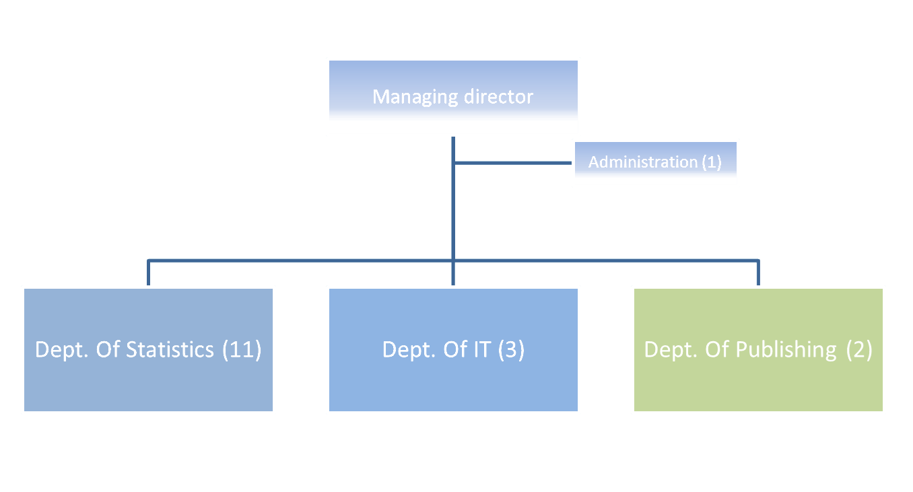
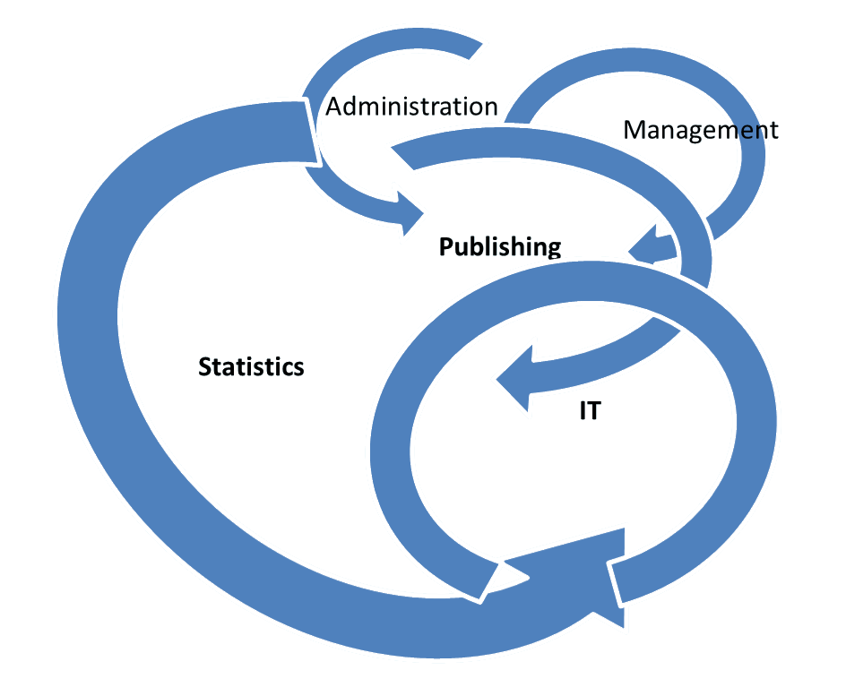
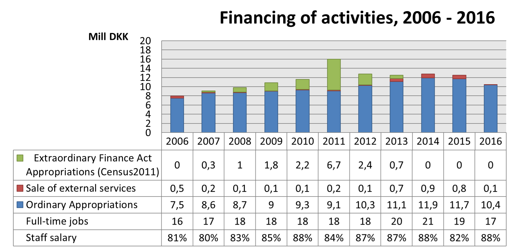

Hagstova Føroya
(Statistics Faroe Islands)

"Country report" - Faroe Islands
1962:
Secretariat of the Economic Advisory Board
1992:
The Statistics Act - National Statistical Office
Faroe Islands are not a member of the EU
Organisation (formal)

Organisation (in reality)

Financing of activities, 2006 - 2016

Statistics - scope
- National accounts
- Basic demographic statistics, population forecasting
- Labour statistics
- Statistics on income distribution
- External trade statistics
- Retail trade statistics
- Statistics on the services sector
- Industrial production statistics
- Consumer price index
Statistics - data sources
- Predominantly register and administrative data
- Some survey-based
- CENSUS 2011 – traditional paper form, distributed and collected by surveyors
Statistics - publishing
- Mainly web:
- A single Publication
- + Contributions to Nordic and International Statistics
Actual or recent “focus areas”
- National Accounts estimates in constant prices - establishing of Supply and Use Tables and Price Time Series
- New service: Anonymised micro-data for resarch purposes
- PX-web upgrade – bilingual, faroese and english
- Population forecasting system refined
- Using a combination of sample survey, census and administrative register data in the labour force statistics
- Unemployment statistics - “Damage control excercise”
Challenges
- Resurrection of Government Bank and new “Systemic Risk Council” – division of labour overlapping ?
- Adjustments to Statistics Act needed
- Staff ageing and top management up for retirement
- Need for better metadata and better management and ICT-security tools
- Funding issues
Opportunities
- Governmental Digitisation Strategy - eGovernment, eServices, Digital Identity, Open Data ....
- Corporate income statement and reporting in XBRL – (including data for Balance of Payments estimates)
- Business Register - legal and local kind of activity units
Otherwise it’s “Business as usual” !!
Thank You for Your attention !!